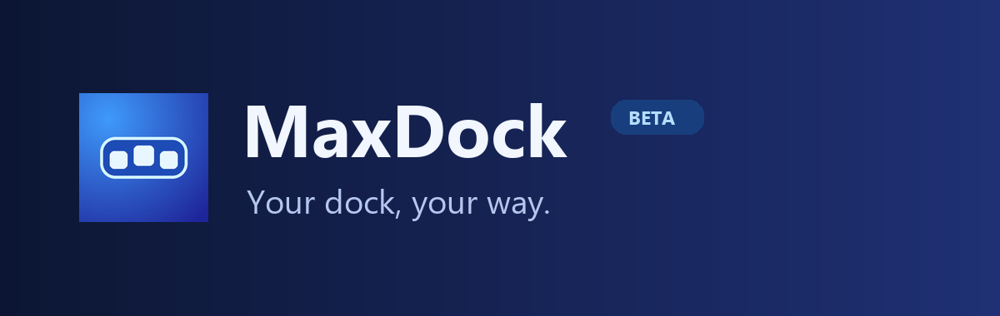
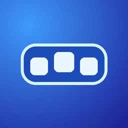

MaxDock Beta
2.0.0-alpha100+ci.8 · Filp Max
Customize the iPhone Home Screen dock with a glass background, adjustable icons, and three ways to browse your apps.
Screenshots


How it works
- Normal gives you a single row with configurable magnification.
- Circular lets you browse apps by rotating the dock.
- Swipe Loop scrolls horizontally and wraps around.
Open Settings → MaxDock to adjust icon size, spacing, capacity and glass appearance. This beta requires a rootless jailbreak. iOS 16 is the tested baseline. Other versions allowed by the package are experimental.